Ride With GPS Links
Day 1 - Worcester to Orange
Day 2 - Orange to Greenfield
This ride was the result of a friend’s wedding out in Montague. I immediately used this opportunity to cover towns in the central portion of Massachusetts, between the Quabbin and Worcester. These towns are notoriously lacking any reliable transportation options, so I knew this was going to be a long bike ride.
For the wedding, we had booked an Airbnb in Orange, MA. As such, I planned a ride starting from Worcester to Orange, along the northern and eastern portions of the Quabbin Reservoir. Highly remote, this part of the state generally seems to be off-the-beaten trail. A ‘here be dragons’ feel, if you will. I got some really nice rural farmland scenery along the way.
The second portion of the ride was from Orange to Greenfield, from where I was going to take an Amtrak train to Springfield to connect to a PeterPan bus back home to Boston.
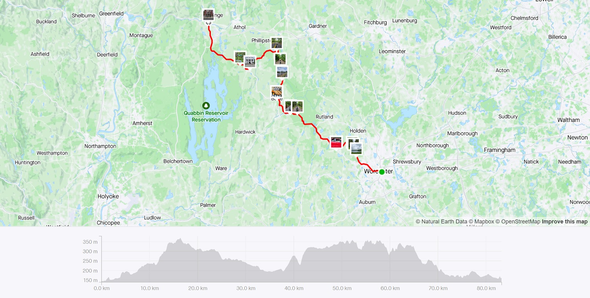 Strava Route Day 1 - Worcester to Orange
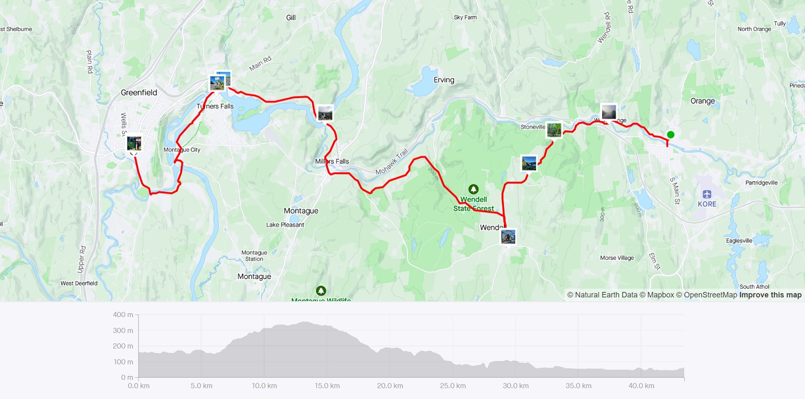 Strava Route Day 2 - Orange to Greenfield
I took the first train out of Boston heading towards Worcester. For a 51 mile ride, I decided on giving it about 6 and a half hours. My thumb-rule for calculating ride duration including stops is 1 hour for every 10 miles, and an additional hour for every 30 miles. This works out most times. Of course, terrain, weather, and the possibility of stops affects this.
The ride out of Worcester, was to my lunch stop in Barre. This was a long, moderate uphill climb, but had some rewarding views of the Holden Reservoir. My lunch stop was at a pie place (now called ‘Cafe on the Common’) in Barre. They had just opened up and had some excellent pies.
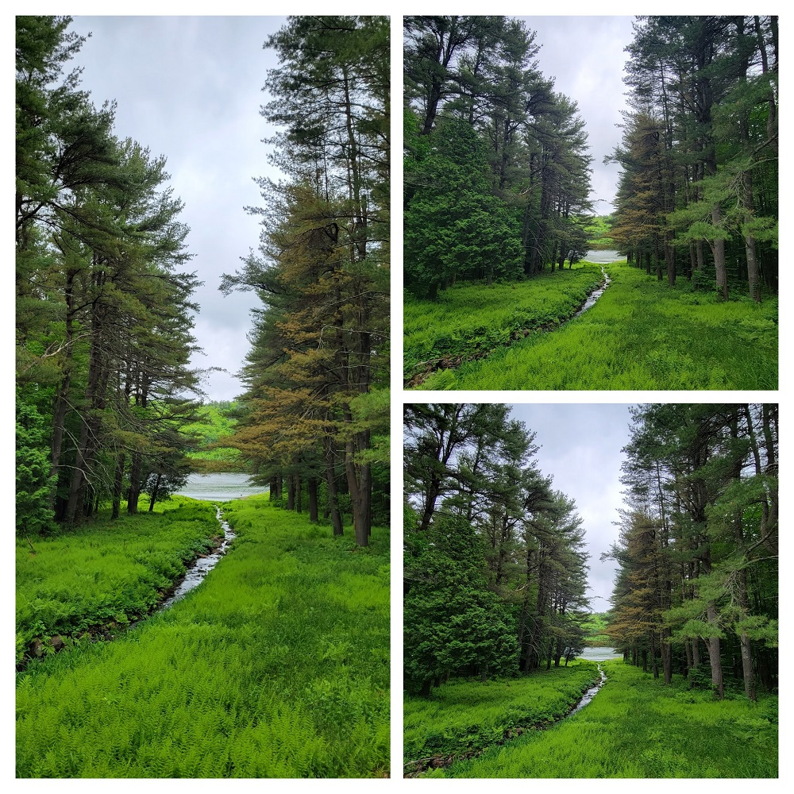 Road along the Holden Reservoir in Worcester
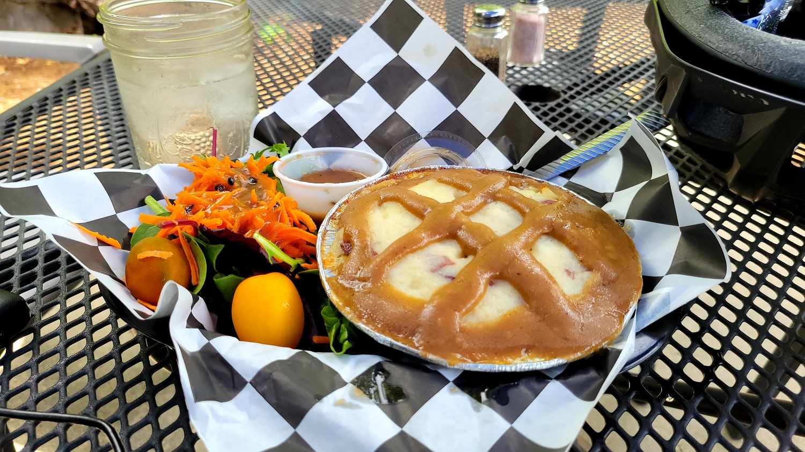 Savory pie for lunch in Barre, MA
I finally arrived in Orange in the afternoon, a couple of hours before the rest of my party was supposed to arrive. I was able to freshen up before heading out to the wedding.
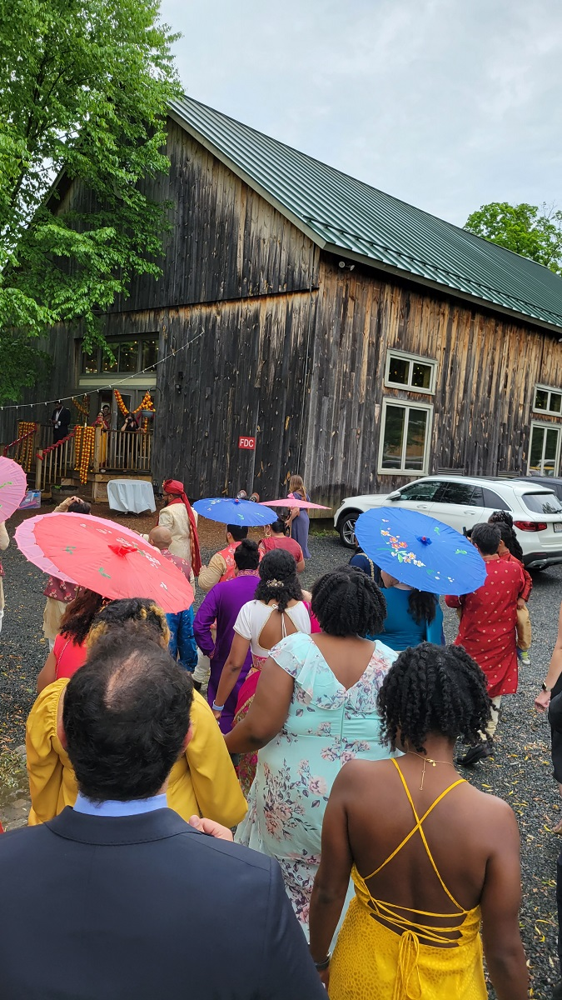 A picture from the wedding procession
Even though this was the shorter portion of the ride, and I had a tight end-point (had to catch the 9am train to Springfield!), it was filled with dramatic views and climbs & descents. It was incredibly misty for the first half of the ride. I started from Orange, climbed up to Wendell, and then descended towards Erving. The portion of Route 2 until Erving is off-limits to bikes, so had to ride via Wendell.
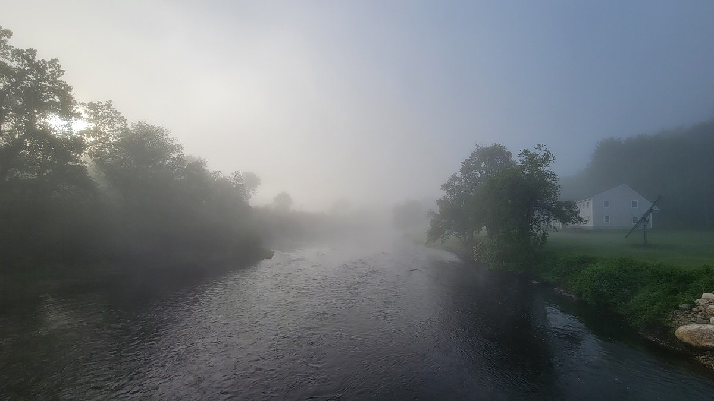 Mist rising along the Millers River in Orange
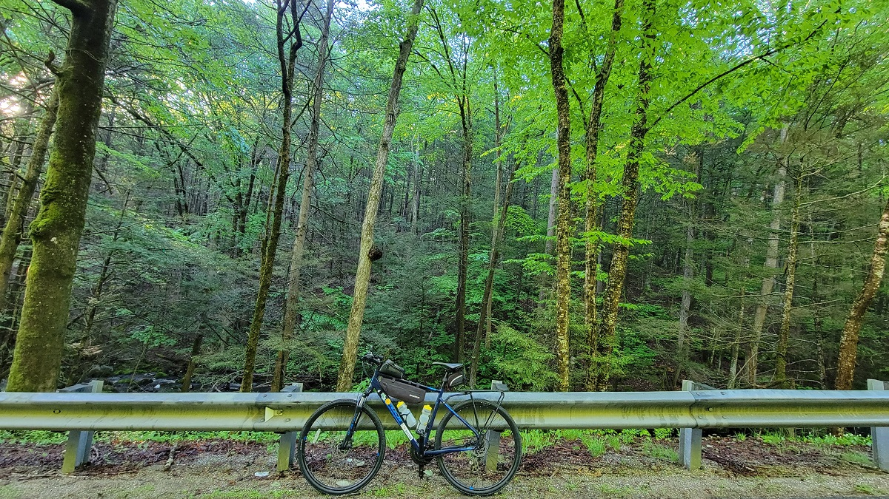 Climbing up to Wendell
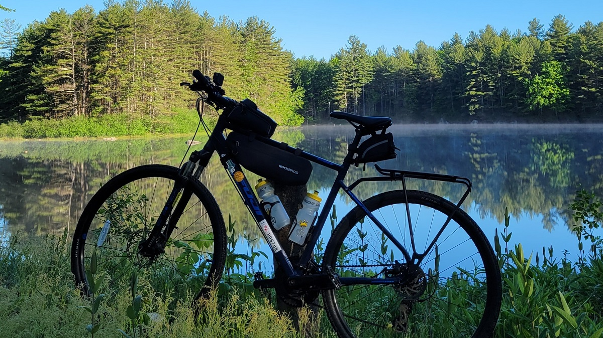 A pond on the bike ride downhill from Wendell
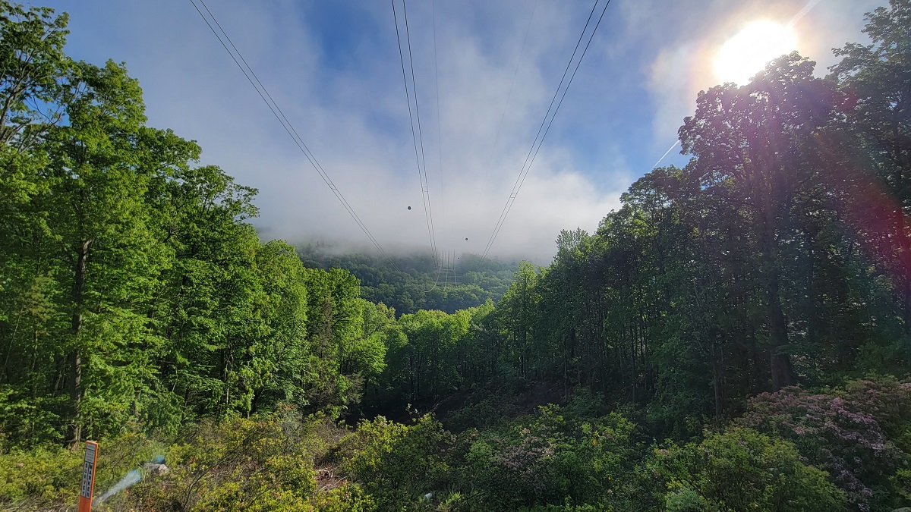 View of the Lyons Brook valley down Wendell Road
After descending from Wendell, I biked along Route 2 over the French King Bridge! I had driven along it in Fall 2021, and was determined to bike across. It was absolutely stunning!
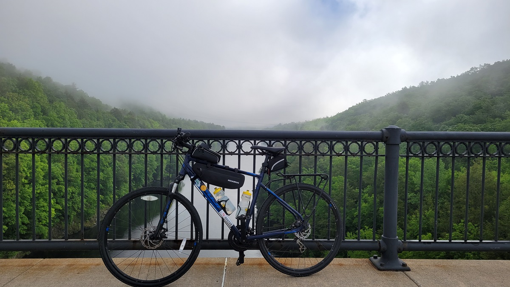 My bike resting on the railing of the French King Bridge, over the Connecticut River
With just under 45 minutes left before I had to catch my train from Greenfield, the next portion of the ride was a rush. I made it just in time, and was able to get a couple of pictures of the newly renovated John W. Olver Transit Center, Greenfield MA.
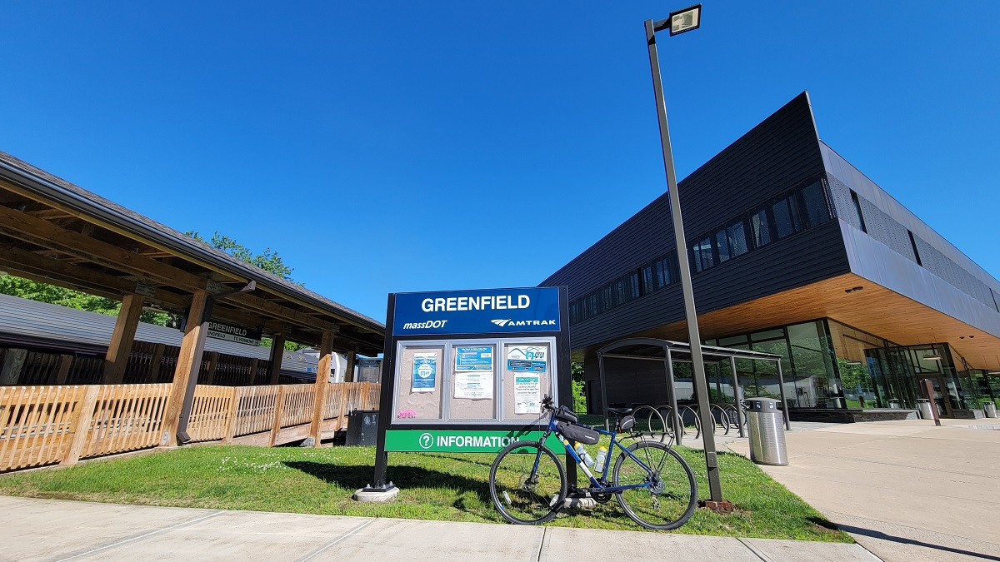 John W. Olver Transit Center, Greenfield MA
The unfortunate outcome of the wedding was, a lot of people including me caught COVID - thankfully it was mild for everyone thanks to vaccinations.
Overall, I covered 15 new towns - Barre, Erving, Holden, Phillipston, Rutland, Petersham, Paxton, Greenfield, Worcester, Hubbardston, Oakham, Gill, Montague, Wendell, and New Salem - bringing the total to 167/351.
Worcester to Greenfield, via Orange & Erving